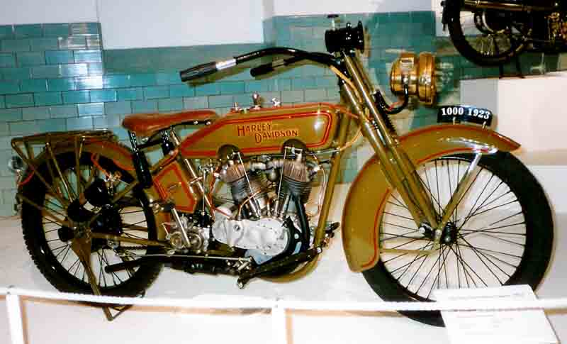
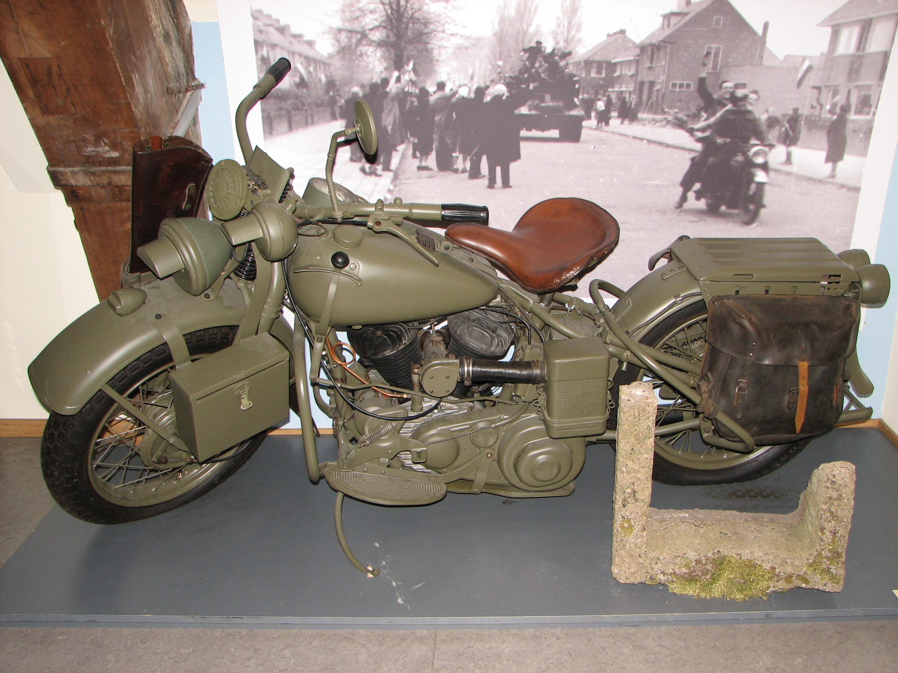

Inc.“, „H-D“ arba „Harley“ yra amerikiečių motociklų gamintojas, įkurtas 1903 metais Milvokyje, Viskonsine. Tai buvo vienas iš dviejų pagrindinių Amerikos motociklų gamintojų, išgyvenusių Didžiąją depresiją, kartu su indėnais. Bendrovė išgyveno daugybę nuosavybės sutarčių, dukterinių susitarimų, prastos ekonominės būklės ir gaminių kokybės laikotarpius bei intensyvią pasaulinę konkurenciją, kad taptų viena didžiausių pasaulyje motociklų gamintojų ir taptų garsiu prekės ženklu, kuris plačiai žinomas dėl savo ištikimų pasekėjų. Visame pasaulyje yra savininkų klubai ir renginiai, taip pat yra bendrovės remiamas, prekės ženklui skirtas muziejus.


